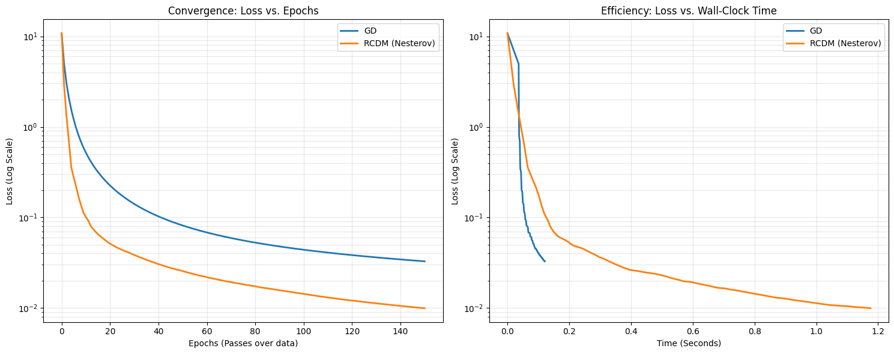
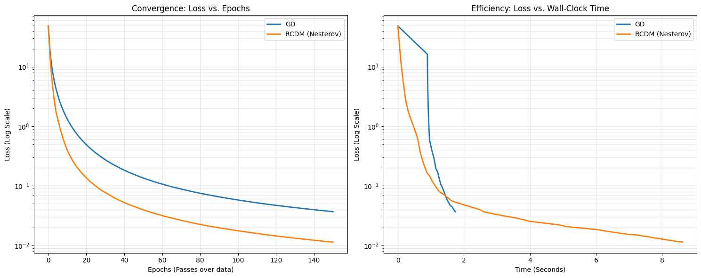
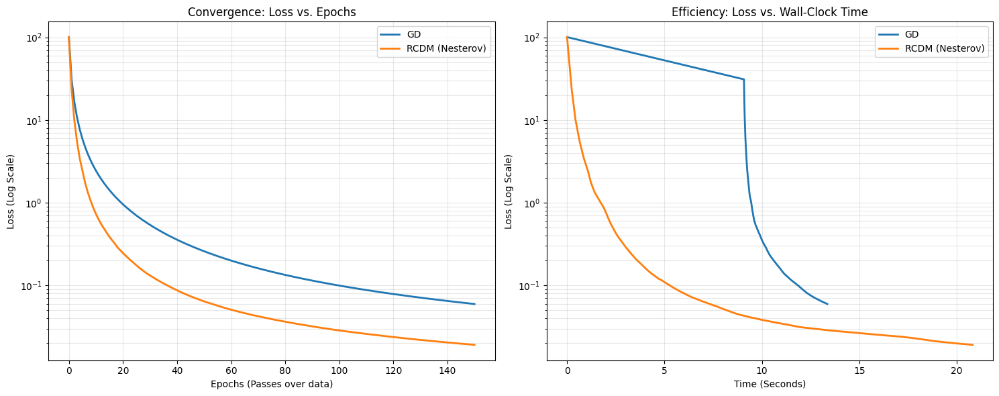
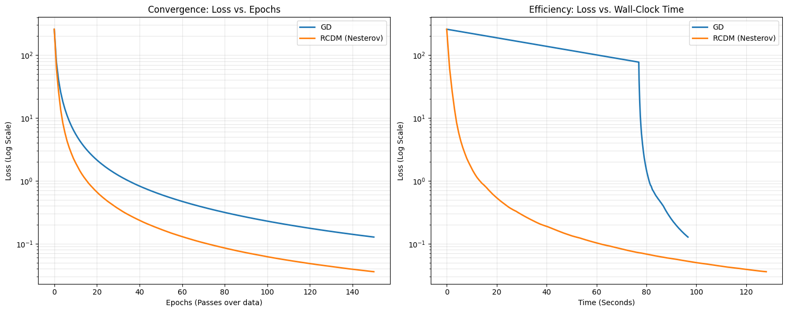
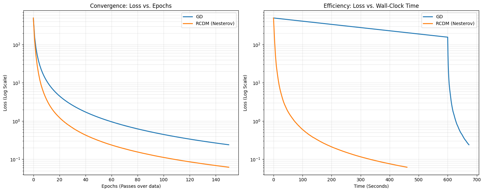
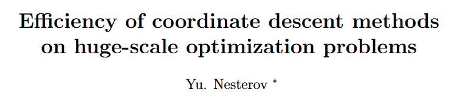
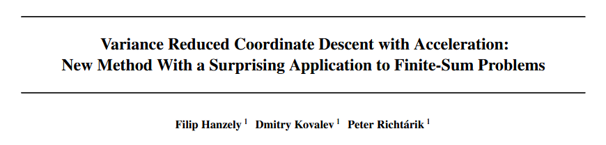

Based on Yu. Nesterov 2010 Foundational Framework
Evaluating \(\nabla f(x)\) becomes computationally expensive
“We must adopt an optimization technique based on the random partial update of decision variables.”
Instead of updating all coordinates at once, update only one block of coordinates per iteration.
\[x = ( x^{(1)}, x^{(2)}, ..., x^{(n)} )\]
If each coordinate update is cheap (e.g., sparse data), many cheap steps can outperform a few expensive full‑gradient steps.
\[ \min_{x \in \mathbb{R}^N} f(x) \]
We will make use of these norms later on during our convergence analysis
\[\|x\|_\alpha = \left[ \sum_{i=1}^n L_i^\alpha \|x^{(i)}\|^2 \right]^{1/2}, \quad x \in \mathbb{R}^N\]
\[\|g\|_\alpha^* = \left[ \sum_{i=1}^n L_i^{-\alpha} (\|g^{(i)}\|^*)^2 \right]^{1/2}, \quad g \in \mathbb{R}^N\]
\[ \langle g,x \rangle \le \| g \|^*_\alpha \cdot \| x \|_\alpha \]
We also define the following sum
\[ S_\alpha = \sum_{i=1}^n L_i^\alpha \]
\(U_i\) is the embedding matrix that maps a vector from the \(i^{th}\) block subspace into the full \(N\)-dimensional space, placing its entries in the correct coordinate positions and zero elsewhere.
\[U_i = \begin{bmatrix} 0 \\ \vdots \\ I_{n_i} \\ \vdots \\ 0 \end{bmatrix}\]
Then the partial gradient of \(f(x)\) in \(x^{(i)}\) is defined as
\[f'_i(x) = U_i^T \nabla f(x) \in \mathbb{R}^{n_i}, \quad x \in \mathbb{R}^N\]
We assume each partial gradient is Lipschitz in its own block
\[ \| f_i^\prime(x + U_ih_i) - f_i^\prime(x) \|^*_{(i)} \le L_i \| h_i \|_{(i)} \]
From the Lipschitz condition, for any step \(h_i\) in block \(i\)
\[ f(x+ U_ih_i) \le f(x) + \langle f_i^\prime(x), h_i \rangle + \frac{L_i}{2} \| h_i \|^2_{(i)} \]
Block‑wise descent lemma
We choose \(h_i\) to minimize the right‑hand side
\[ h^*_i = -\frac{1}{L_i} f_i^\prime(x)\]
\[ T_i(x) = x - \frac{1}{L_i}U_if_i^\prime(x) \]
\[ f(x) - f(T_i(x)) \ge \frac{1}{2L_i} (\| f_i^\prime(x) \|_{i})^2 \]
So the decrease is proportional to the squared size of the partial gradient.
At each iteration we pick a random block \(i\) with probability
\[ p_{\alpha}^i = \frac{L_i^\alpha}{\sum_{j=1}^n L_j^\alpha} \; ,\alpha \in \mathbb{R} \]
Thus, for a larger \(\alpha\), the algorithm naturally tends to update coordinates with higher curavature (steeper gradients) more frequently.
Input: starting point \(x_0\), parameter \(\alpha\)
For \(k=0,1,2,\dots\) do
End
Let \(f\) satisfy Coordinate‑wise Smoothness. Then for any \(\alpha \in \mathbb{R}\) we have:
\[\|\nabla f(x) - \nabla f(y)\|_{1-\alpha}^* \le S_\alpha \|x - y\|_{1-\alpha}, \quad x, y \in \mathbb{R}^N\]
Therefore, we have the following quadratic upper bound:
\[f(x) \le f(y) + \langle \nabla f(y), x - y \rangle + \frac{1}{2} S_\alpha \|x - y\|_{1-\alpha}^2, \quad x, y \in \mathbb{R}^N\]
For any \(k \ge 0\) we have:
\[\phi_k - f^* \le \frac{2}{k+4} \cdot \left[ \sum_{j=1}^n L_j^\alpha \right] \cdot R_{1-\alpha}^2(x_0)\]
where: \[R_\beta(x_0) = \max_x \left\{ \max_{x^* \in X^*} \|x - x^*\|_\beta : f(x) \le f(x_0) \right\}\]
\[ \phi_k = \mathbb{E}[f(x_k)] \]
\(\displaystyle \phi_k - f^* \le\)
\(\displaystyle \frac{2}{k+4}\)
\(\displaystyle \cdot \left[ \sum_{j=1}^n L_j^\alpha \right]\)
\(\displaystyle \cdot R_{1-\alpha}^2(x_0)\)
Expected suboptimality after \(k\) iterations (average gap to optimum)
Rate factor: decreases as \(O(\frac{1}{k})\), independent of dimension
Sum of coordinate Lipschitz constants (raised to power \(\alpha\)) which captures smoothness.
Squared radius of the initial level set, measured in the \(\| \cdot \|_{1-\alpha}\) norm; quantifies how far we start from optimality.
\[f(x_k) - \mathbb{E}_{i_k} [f(x_{k+1}) \mid x_k]\]
\[ = f(x_k) - \sum_{i=1}^n Pr[i_k=i \mid x_k] \cdot f(x_{k+1})\]
\[ = \sum_{i=1}^n p_{\alpha}^i \cdot f(x_k) - \sum_{i=1}^n p_{\alpha}^i \cdot f(T_i(x_k))\]
\[ = \sum_{i=1}^n p_{\alpha}^i \cdot [f(x_k) - f(T_i(x_k))]\]
Using the guaranteed decrease we derived earlier
\[ f(x) - f(T_i(x)) \ge \frac{1}{2L_i} (\| f_i^\prime(x) \|)^2 \]
\[f(x_k) - \mathbb{E}_{i_k} [f(x_{k+1}) \mid x_k]\]
\[ \ge \sum_{i=1}^n p_{\alpha}^i \cdot \frac{1}{2L_i} \cdot \| f_i^\prime(x_k) \|^2\]
\[ = \sum_{i=1}^n \frac{L_i^\alpha}{S_\alpha} \cdot \frac{1}{2L_i} \cdot \| f_i^\prime(x_k) \|^2\]
\[ = \frac{1}{2S_\alpha} \cdot \sum_{i=1}^n L_i^{-(1-\alpha)} \cdot \| f_i^\prime(x_k) \|^2\]
Using the norm definition \(\| g \|_\alpha^* = \sqrt{\sum_{i=1}^n L_i^{-\alpha} \| g^{(i)} \|^2}\)
\[ f(x_k) - \mathbb{E}_{i_k} [f(x_{k+1}) \mid x_k] \ge \frac{1}{2S_\alpha}(\| \nabla f(x_k) \|^*_{1-\alpha})^2 \]
Since \(f\) is convex and for any point \(x^* \in X^*\), we have
\[ f(x_k) - f^* \le \langle \nabla f(x_k), x_k - x^* \rangle \]
Using the Cauchy-Schwartz inequality seen earlier
\[ \langle g,x \rangle \le \| g \|^*_\alpha \cdot \| x \|_\alpha \]
\[ \langle \nabla f(x_k), x_k - x^* \rangle \le \| \nabla f(x_k) \|^*_{1-\alpha} \cdot \| x_k - x^* \|_{1-\alpha} \]
Since \(f(x_k) \le f(x_0)\), \(x_k\) lies in the initial level set
\[ \| x_k - x^* \|_{1-\alpha} \le R_{1-\alpha}(x_0) = R \]
\[ f(x_k) - f^* \]
\[ \le \langle \nabla f(x_k), x_k - x^* \rangle \]
\[ \le \| \nabla f(x_k) \|^*_{1-\alpha} \cdot \| x_k - x^* \|_{1-\alpha} \]
\[ \le \| \nabla f(x_k) \|^*_{1-\alpha} \cdot R \]
Squaring both sides and rearranging
\[ (\| \nabla f(x_k) \|^*_{1-\alpha})^2 \ge \frac{(f(x_k) - f^*)^2}{R^2} \]
From Step 1
\[ f(x_k) - \mathbb{E}_{i_k} [f(x_{k+1}) \mid x_k] \ge \frac{1}{2S_\alpha}(\| \nabla f(x_k) \|^*_{1-\alpha})^2 \]
From Step 2
\[ (\| \nabla f(x_k) \|^*_{1-\alpha})^2 \ge \frac{(f(x_k) - f^*)^2}{R^2} \]
Using the above two steps to get
\[ f(x_k) - \mathbb{E}_{i_k} [f(x_{k+1}) \mid x_k] \ge \frac{1}{2S_\alpha R^2}(f(x_k) - f^*)^2 \]
Define the following
\[ \phi_k = \mathbb{E}_{\xi_{k-1}} [f(x_k)] \]
\[ \phi_{k+1} = \mathbb{E}_{\xi_{k}} [f(x_{k+1})] \]
Apply \(\mathbb{E}_{\xi_{k-1}}\) to the derived inequality from Step 1 and Step 2
\[ f(x_k) - \mathbb{E}_{i_k} [f(x_{k+1}) \mid x_k] \ge \frac{1}{2S_\alpha R^2}(f(x_k) - f^*)^2 \]
to get
\[ \phi_k - \phi_{k+1} \ge \frac{1}{2S_\alpha R^2} \cdot \mathbb{E}_{\xi_{k-1}} [(f(x_k) - f^*)^2] \]
Use Jensen’s Inequality
\[ \phi_k - \phi_{k+1} \ge \frac{1}{2S_\alpha R^2} \cdot (\mathbb{E}_{\xi_{k-1}} [f(x_k) - f^*])^2 = \frac{1}{2S_\alpha R^2} (\phi_k - f^*)^2 \]
\[ \phi_k - \phi_{k+1} \ge \frac{1}{C} (\phi_k - f^*)^2, \; where \; C = 2S_\alpha R^2\]
Define
\[ \delta_k = \phi_k - f^* \ge 0 \]
The recurrence relation from Step 3 becomes
\[ \delta_k - \delta_{k+1} \ge \frac{1}{C} \delta_k^2 \]
Note that
\[ \delta_k > 0 \; and \; \delta_{k+1} \le \delta_k\]
Follow through with some algebra
\[ \frac{1}{\delta_{k+1}} - \frac{1}{\delta_k} = \frac{\delta_k - \delta_{k+1}}{\delta_k \delta_{k+1}} \ge \frac{\delta_k^2}{C \delta_k \delta_{k+1}} \ge \frac{1}{C} \]
\[ \frac{1}{\delta_{k+1}} \ge \frac{1}{\delta_{k}} + \frac{1}{C} \]
Using telescopic sum trick, we get
\[ \frac{1}{\delta_{k+1}} \ge \frac{1}{\delta_{0}} + \frac{k}{C} \]
We would like to get a bound on \(\delta_0\). We can use Lemma 2
\[ f(x) \le f(y) + \langle \nabla f(y), x-y \rangle + \frac{1}{2} S_\alpha \| x-y \|^2_{1-\alpha} \]
\[ f(x_0) \le f(x^*) + \langle \nabla f(x^*), x_0-x^* \rangle + \frac{1}{2} S_\alpha \| x_0-x^* \|^2_{1-\alpha} \]
\[ f(x_0) \le f(x^*) + \frac{1}{2} S_\alpha \| x_0-x^* \|^2_{1-\alpha} \]
\[ f(x_0) - f(x^*) \le + \frac{1}{2} S_\alpha R^2 \]
\[ \delta_0 \le + \frac{1}{2} S_\alpha R^2 \]
\[ \frac{1}{\delta_0} \ge \frac{2}{S_\alpha R^2} = \frac{4}{2S_\alpha R^2} = \frac{4}{C} \]
\[ \frac{1}{\delta_0} \ge \frac{4}{C} \]
\[ \frac{1}{\delta_{k+1}} \ge \frac{1}{\delta_{0}} + \frac{k}{C} \ge \frac{4}{C} + \frac{k}{C} = \frac{k+4}{C}\]
\[ \delta_k \le \frac{C}{k+4} = \frac{2S_\alpha R^2}{k+4}\]
\[ \phi_k - f^* \le \frac{2}{k+4} \cdot [\sum_{i=1}^n L_i^\alpha] \cdot R_{1-\alpha}^2(x_0)\]
Optimization Problem \[ \min_w \; \frac{1}{n} \|Xw - y\|^2 \]
\(\textbf{Methods Compared}\) Gradient Descent (GD) vs Randomized Coordinate Descent (RCDM)
\(\textbf{Metrics}\) Loss vs Epochs and Loss vs Time





Gradient Descent (GD)
\[ L = \frac{2}{n} \lambda_{\max}(X^T X) \]
RCDM
\[ L_i = \frac{2}{n} \|X[:, i]\|^2 \]
As dimension \(d\) increases:
RCDM scales better for high-dimensional problems
Coordinate methods enable scalable optimization in high dimensions


\[ \min_{x \in \mathbb{R}^N} P(x) = f(x) + \psi(x) \]
Properties of \(f(x)\)
Properties of \(\psi(x)\)
1. Separability Requirement - Updates: \(x_{k+1}^{(i)} = \text{prox}_{\eta \psi_i}(x_k^{(i)} - \eta f'_i(x_k))\) - Fails when \(\psi(x)\) is non-separable (e.g., L2 norm). - Coordinates cannot be updated independently.
2. Non-Vanishing Variance - Uses partial gradient \(f'_i(x)\) instead of full \(\nabla f(x)\). - Introduces stochastic noise that does not disappear near the optimum. - Leads to Zig-Zag behavior and prevents faster convergence.
3. No Acceleration - Convergence rate: \(\mathbf{O(1/k)}\). - Momentum incompatible with non-separable regularizers. - Inefficient for modern huge-scale problems.
Update Rule (New Capability)
\[x_{k+1} = \text{prox}_{\eta \psi}(x_k - \eta g_k)\]
Nesterov (2012) vs. ASVRCD (2020)
Why is this feasible now? - Made efficient by the Variance Reduction scheme (next slide).
The Problem - Standard RCD uses only the current partial gradient \(\nabla_i f(x_k)\). - This estimate is noisy and the noise does not disappear as we approach the solution.
The Fix: Use a “Memory” Vector - Maintain a stored gradient \(h^k \in \mathbb{R}^N\). - Correct the current estimate by subtracting old information and adding the global average:
\[(g_k)_i = \underbrace{\nabla_i f(x_k)}_{\text{Current}} - \underbrace{h_i^k}_{\text{Old memory}} + \underbrace{\frac{1}{N}\sum_{j=1}^N h_j^k}_{\text{Global average}}\]
Why It Works - The correction terms cancel out the randomness over time. - As \(x_k \to x^*\), the variance of \(g_k\) goes to zero.
Consequence - The algorithm behaves more and more like full gradient descent near the optimum. - This stability allows us to safely add Nesterov acceleration (Solution 3).
The Idea
Effect
“ASVRCD combines proximal updates, variance reduction and acceleration that enables randomized coordinate descent to handle complex regularization while improving convergence speed and stability”